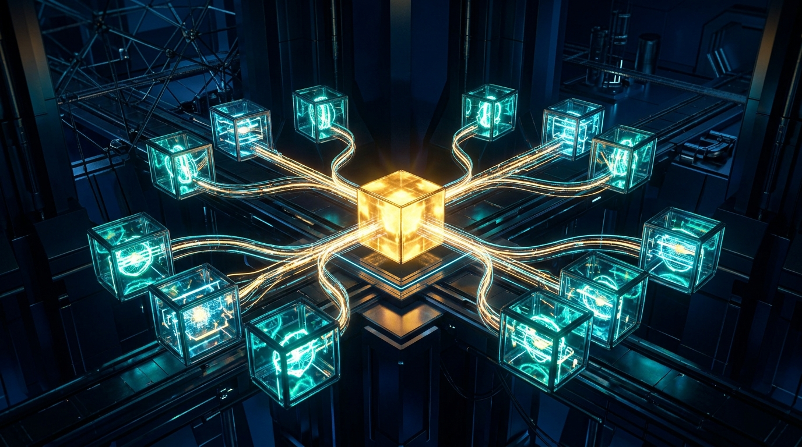

The complete 12-page visual handbook to architecting ephemeral microVMs, Firecracker, E2B, Docker, and gVisor environments for safe autonomous code execution, snapshotting, and network egress control.
Autonomous coding agents must run arbitrary bash scripts, compile dependencies, and test untrusted code without putting host servers, development machines, or cloud credentials at risk.
The untrusted control plane where the LLM agent lives. Manages tool execution, enforces budgets, and dispatches commands over safe IPC bridges.
Hardware-assisted virtualization boundary. The guest operating system runs its own independent Linux kernel, preventing host kernel exploit escapes.
Disposable sandbox container or microVM with copy-on-write storage, dedicated virtual network interface, and strict cgroups v2 resource ceilings.
Choosing the right sandbox architecture requires balancing boot speed, syscall fidelity, and blast-radius security. Running untrusted AI code demands virtualization with hardware boundaries.
| Technology | Boot Latency | Isolation Primitive | Syscall & Binaries | Best Agent Workload |
|---|---|---|---|---|
| Docker / runc | 300ms – 1.2s |
cgroups v2 + Linux namespaces | 100% Linux native; shares host kernel | Trusted local scripts, internal CI jobs. High breakout risk for untrusted code. |
| gVisor / runsc | 150ms – 400ms |
Go user-space kernel (Sentry) | Intercepts syscalls; partial Linux ABI (~80%) | Serverless endpoints, multi-tenant untrusted Python data scripts. |
| Firecracker microVM | 5ms – 35ms |
Hardware KVM hypervisor + jailer | 100% native isolated guest kernel | Autonomous coding agents, terminal bash tools, untrusted npm/pip builds. |
| WASI / WebAssembly | < 5ms |
Wasm capability sandbox | Strict capability model; non-POSIX without polyfills | Deterministic edge math, simple plugins. Cannot run arbitrary bash or apt packages. |
Assign 1 to 2 vCPUs and 1GB to 2GB RAM per microVM session. Use virtio-balloon to reclaim memory from idle VMs dynamically. Set hard swap to zero to avoid host thrashing.
Ceiling: memory.max = 2147483648 • cpu.max = "200000 100000"
Provide a 5GB to 10GB sparse ext4 drive formatted on a Copy-on-Write overlay layer. Ensure /tmp is mounted with nodev,nosuid,noexec flags or strictly quota-capped via cgroups.
Quota: quota -u sandbox 8G 10G • Auto-reap on session end
High-reliability agent platforms provide an interactive dashboard and telemetry console to supervise live microVMs, inspect file diffs, enforce timeouts, and intercept network egress.
src/auth/token-verifier.ts (+28 / -4 lines)tests/fixtures/tampered-jwt.json (1.2KB).cache/turbopack.locksnap_turn_03 (Saved 4.2s ago) • [Fork Sandbox] [Rollback]
GITHUB_TOKEN (Scoped: repo:read, expires 12m)
1 Status & Watchdog Timer: Displays live sandbox state, turn counter, and hard timeout enforcing automatic termination.
2 CoW Storage Inspector: Tracks file modifications in the isolated overlay layer. Only explicitly committed diffs are exported back to git.
3 PTY Terminal Stream: Emulates full Linux pseudo-terminals, capturing ANSI colors, cursor movements, and interactive prompts without blocking.
4 cgroups v2 Telemetry: Live gauges for CPU quota, memory RSS vs balloon limit, and process count to catch runaway fork bombs.
5 Egress Firewall Filter: Transparent proxy logging every TCP/UDP packet. Whitelists developer registries while dropping metadata and LAN IP addresses.
6 Snapshot Tree & Fork: Instant snapshot mechanism allowing human supervisors or orchestrators to pause, fork, or rewind agent state.
7 Secret Quarantine: Injects short-lived, single-purpose tokens. Master platform keys never touch guest filesystem or environment variables.
Amazon Firecracker strips away legacy PC peripherals, BIOS emulations, and complex ACPI tables, delivering minimalist virtual machines that boot in under 35 milliseconds with under 5MB memory overhead.
Firecracker only supports four essential virtual devices: virtio-net (networking), virtio-block (disk storage), virtio-vsock (host-guest IPC), and a serial console.
Result: No PCI buses, no IDE controllers, no floppy drives. Instant kernel uncompression and initialization.
Before booting the microVM, the Firecracker jailer creates a strict chroot environment, drops all superuser privileges to an unprivileged UID/GID, applies seccomp filters, and binds cgroups limits.
Zero escape path: Even if an attacker gains root in guest Linux, they remain in an unprivileged chroot jail.
High-throughput zero-copy ring buffer connecting host CID and guest port. Does not traverse network routing tables or firewall rules.
A lightweight daemon inside the guest listens on vsock port 5000, multiplexing stdin, stdout, stderr, and exit codes over framed binary packets.
Inject codebases, git worktrees, or unit tests into the guest in milliseconds via tar streams directly over vsock without disk writing on the host.
By decoupling the immutable golden rootfs from mutable agent scratch space, microVMs achieve instantaneous state snapshotting, branchable evaluation forks, and zero-risk rollbacks.

The base operating system image (with Node.js, Python, git, and compilers) is mounted read-only. All writes, file modifications, and temporary artifacts are redirected to an ephemeral sparse delta file using device-mapper or overlayfs.
Teardown efficiency: Destroying a sandbox simply requires deleting the tiny delta file without scrubbing the base image.
Firecracker's CreateSnapshot dumps guest memory and device state to disk in ~60ms. When an agent enters a complex decision loop, the orchestrator snapshots state, tests multiple prospective patches in parallel branches, and retains only the winning run.
Memory tracking: track_dirty_pages ensures subsequent incremental snapshots take only 5ms to 15ms.
git diff against the worktree, audits the patch, and commits only verified clean changes back to Git.
Autonomous agents running untrusted code face indirect prompt injection attacks designed to exfiltrate private codebases, SSH keys, or cloud credentials. Strict egress filtering is mandatory.
Hard-block the link-local address 169.254.169.254 (AWS/GCP/Azure instance metadata) and private RFC 1918 subnets via iptables at the host TAP bridge.
Route all outbound HTTP/HTTPS ports through an inspecting proxy (e.g. Envoy or Smokescreen) enforcing an explicit domain allowlist (e.g., PyPI, npm, GitHub).
Never inject long-lived personal access tokens. Issue 15-minute, repo-scoped single-use credentials with read-only permissions by default.
Executing tool commands requires robust IPC: handling interactive user prompts, streaming ANSI color output to LLM context, managing background daemons, and terminating runaway fork bombs.
Standard pipes cause tools like npm, pytest, and git to disable interactive color output and buffer stdout in 4KB chunks. Allocating a real PTY (pseudo-terminal) forces line-buffering and immediate streaming back to the agent controller.
Benefit: The LLM receives early test progress tokens in real time rather than waiting for completion.
Commands that spawn background processes or servers (e.g. next dev &) will leak child processes if terminated by standard SIGTERM. The sandbox agent must assign each execution its own process group (setpgid) and signal the group via kill(-pgid, SIGKILL).
cgroups safeguard: Set pids.max = 128 to prevent recursive fork bombs from exhausting host threads.
stdout chunkStreams raw utf-8 text chunks with monotonic sequence numbers. Truncates intelligently when exceeding 1MB budget.
stderr alertDelivers runtime stack traces, compilation errors, and warning logs on an isolated error channel.
exit contractEmits exit code, total execution duration (ms), peak RSS memory, and list of modified filesystem paths.
Battle-tested recipes for common agent use cases—from disposable Python data interpreters and autonomous bugfix loops to multi-tenant team eval harnesses.
| Recipe & Goal | Tech Stack | Core Implementation Pattern | Safety Gate |
|---|---|---|---|
| 1. Disposable Data Analyst Execute agent Python scripts & extract charts |
E2B Cloud or Firecracker microVM | const box = await Sandbox.create();const out = await box.runCode(code);await out.results[0].png() |
Zero internet access; 30s timeout; automatic session destroy after chart extraction. |
| 2. Autonomous Bugfix Agent Run full git repo builds & unit test suites |
Docker / Rootless dev container + CoW | docker run --rm --pids-limit 128--memory 2g --network none-v $REPO:/workspace:ro |
Root directory mounted read-only; writes directed to tmpfs overlay; git diff audit. |
| 3. Headless Browser Sandbox Run Playwright & Chrome DevTools MCP |
Firecracker microVM + Xvfb / Chromium | chromium --headless --no-sandbox--disable-gpu --remote-debugging-port |
MitM proxy blocks intranet LAN & internal IP addresses; cookie quarantine. |
| 4. Multi-Tenant Eval Runner Benchmarking 100+ parallel agent turns |
gVisor (runsc) + Kubernetes Pods |
runtimeClassName: gvisorresources.limits.cpu: "1"resources.limits.memory: "1Gi" |
Kernel syscall interposition; hard pod lifecycle eviction on timeout. |
| 5. Warm-Pool Snapshot Orchestrator Instant <10ms sandbox acquisition |
Firecracker microVM + Snapshot Resume | ./jailer --exec-file firecrackerPUT /snapshot/loadvirtio-balloon deflate |
Pre-booted pool of 5 idle VMs kept in memory; auto-replenished on checkout. |
Scaling sandbox infrastructure requires choosing between managed cloud providers and self-hosted clusters, tracking OpenTelemetry spans, and optimizing idle warm-pool expenses.
Managed Sandboxes (E2B, Vercel Sandboxes, Modal): Zero cluster maintenance, built-in snapshot APIs, instant global scaling. Best for product engineering teams shipping agent applications quickly.
Self-Hosted Firecracker (AWS bare-metal / Hetzner): Requires Linux hosts with nested KVM support (e.g. AWS c6i.metal). Delivers lowest per-hour unit costs for high-volume benchmark runs.
Emit structured spans for every sandbox lifecycle event: sandbox.spawn, code.inject, command.exec, egress.check, and sandbox.destroy.
Telemetry attributes: Record memory RSS, exit codes, bytes transferred, and blocked egress domain attempts for automated security anomaly detection.
Zero idle cost. MicroVM boots in 25ms-40ms on user request. Optimal for sporadic or interactive human-in-the-loop agent workflows.
Keeps 5 to 10 paused microVM snapshots ready. Delivers <10ms instant takeover. Essential for real-time customer-facing chatbots.
Hard shutdown after 5 minutes of agent inactivity. Snapshot memory state to disk and free hypervisor RAM back to the host pool.
env or cat .env). Host orchestrators must install regex token interceptors that redact API keys, session tickets, and private keys into [REDACTED_SECRET] tokens before passing terminal output back into LLM context prompts.
How modern agent frameworks integrate sandboxes across the development lifecycle—orchestrating code generation, isolated test execution, security scanning, and automated Git pull requests.
Tools like Claude Code and OpenAI Codex invoke sandboxes via MCP or CLI flags (--sandbox). The agent receives standard bash and edit tools, while the underlying execution is safely jailed inside disposable microVMs.
Headless agents like Jules spawn cloud sandboxes on GitHub webhooks, compile pull requests, run Playwright E2E suites, and attach screenshot artifacts before submitting PR reviews.
Rapid diagnostic solutions for the top seven sandbox failure modes, paired with a mandatory pre-flight readiness checklist for production agent deployments.
| Symptom & Error | Root Cause | 10-Second Production Fix |
|---|---|---|
OOMKilled / Exit 137 |
Agent process exceeded cgroups memory.max. |
Increase sandbox RAM to 2GB or add NODE_OPTIONS="--max-old-space-size=1536". |
Command timed out (300s) |
Process waiting on interactive stdin or server hang. | Launch in PTY mode; pass --yes / -y non-interactive flags; enforce watchdog kill. |
connect: Network unreachable |
Outbound call blocked by egress firewall allowlist. | Add domain (e.g. registry.yarnpkg.com) to transparent proxy whitelist configuration. |
Permission denied: /dev/kvm |
Rootless sandbox daemon missing KVM device group. | Run sudo usermod -aG kvm $USER and verify permissions chmod 666 /dev/kvm. |
No space left on device |
OverlayFS sparse delta exhausted allocated disk quota. | Increase ephemeral disk budget to 10GB or mount temporary compilation cache to tmpfs. |
Zombie process leak |
Guest child processes orphaned without PID 1 reaper. | Use tini or dumb-init as microVM entrypoint: /init.agent -- /sbin/tini -s --. |
Snapshot restore desync |
Vsock socket ring buffer state corrupted on wake. | Close all active vsock streams before triggering CreateSnapshot; re-handshake on resume. |
□ 1. Hardware Virtualization Verified: Run kvm-ok to confirm Intel VT-x / AMD-V acceleration is active and microVM cold boot takes under 40ms.
□ 2. cgroups v2 Limits Enforced: Confirm hard caps on memory.max, cpu.max, and pids.max are active to prevent host starvation.
□ 3. Metadata SSRF Blocked: Verify that requests to http://169.254.169.254 from inside the sandbox immediately drop with zero response.
□ 4. CoW Storage Isolation: Test that writing 1GB to /workspace inside the sandbox leaves the host base image completely untouched.
□ 5. PTY Process Group Cleanup: Verify that sending a kill signal terminates the entire process tree, leaving zero orphaned background daemons.
□ 6. Secret Redaction Active: Verify that running env inside the sandbox displays masked tokens and single-use scoped credentials only.